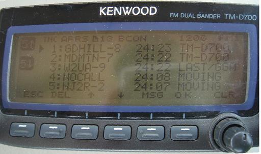
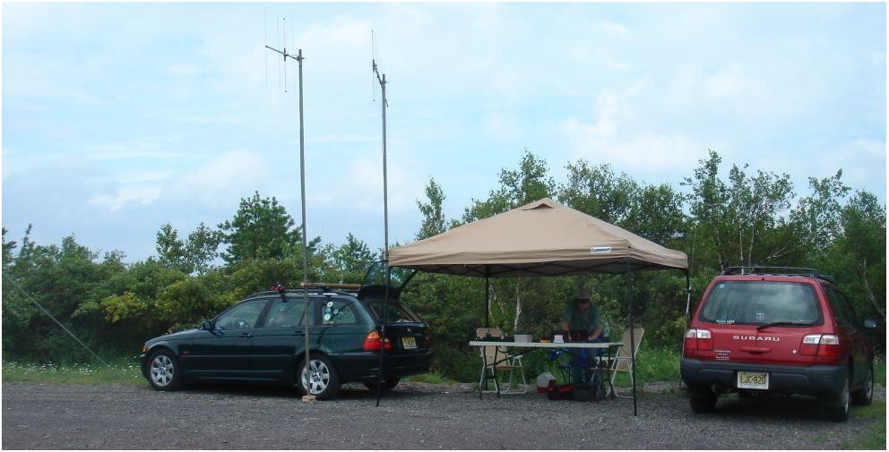
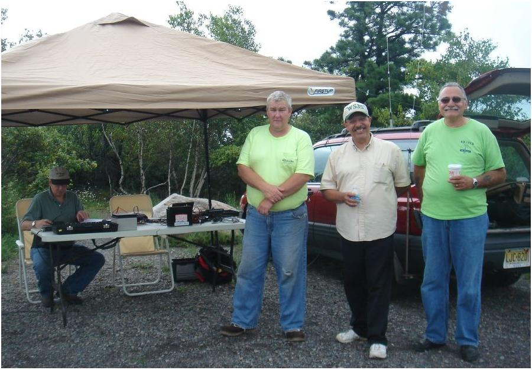
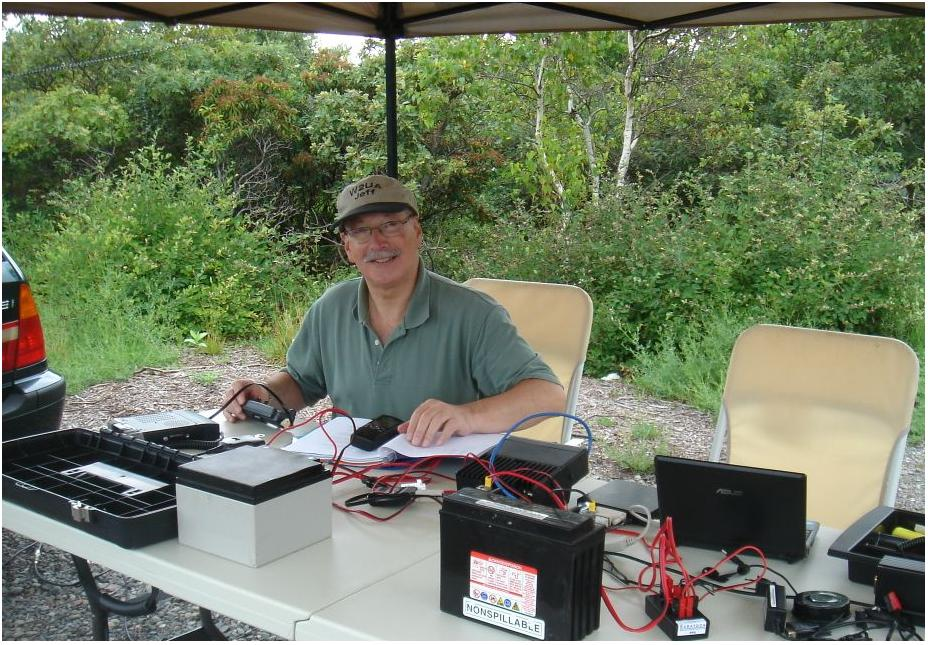
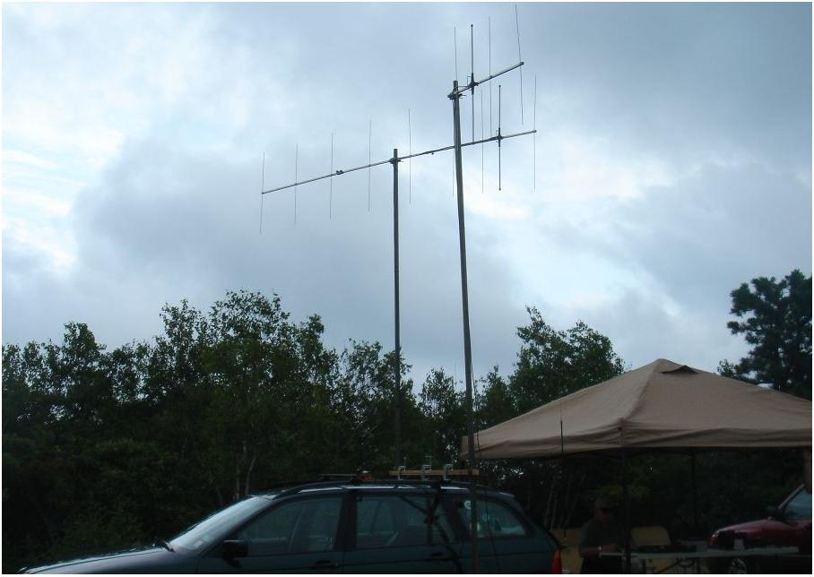
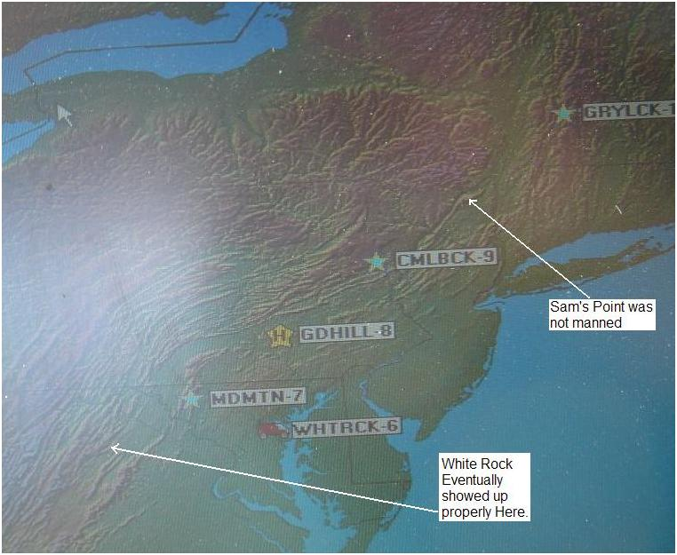
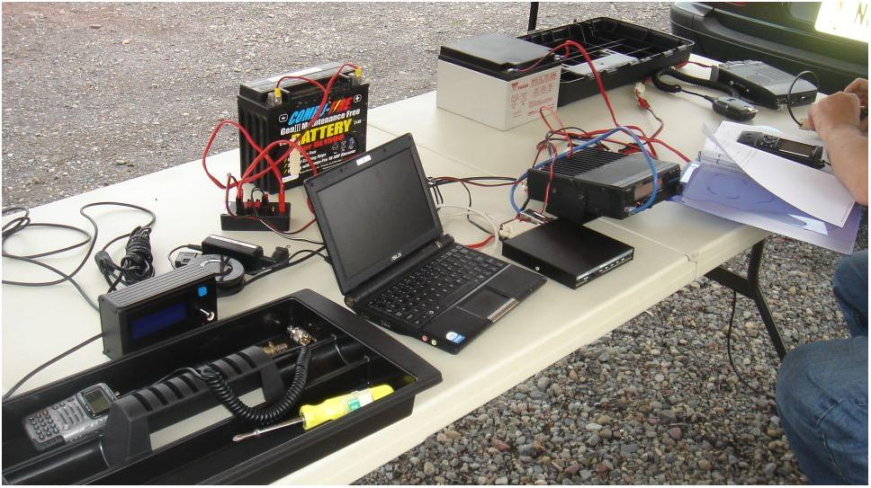

Photos from 2009 Attempt:

This first shot is of the D700 screen showing the two stations we heard. White Rock Cliffs showed up later, and eventually got their position in the right place.

We set up under a canopy with beams pointed NE and SW.

In the picture above you can see Jeff in the operating position and three other guys from the EPA club who happened to be on the Hill at the same time doing another club activity. N3BUB is standing on the left, WS3S is to the right of Bub and the guy on the right is not known at this time.

Jeff Kashinsky,W2UA, is under the tent operating. Roger, who took the pictures didn't seem to get in the pictures.

The antennas used were both F9FT Tonna antennas from France, a 9 element towards Mt. Greylock and the 4 element towards GD Hill. A 5 db gain omni on my BMW was used for 445.925.

Looking at the map above, it is amazing that the 9 element even managed to pick up Greylock on a 160 mile path! We need an intermediate site next time. N3BUB says he is intimately familiar with Sam's Point and would gladly have activated it if he had only known about the event until the day before. I suspect he will do it next time as he was very enthused and engaged in what we were doing.

Above is a photo of the overall operating position and batteries used for power.
73, Roger, NJ2R
This is one of the 15 hill-top sites from Georgia to Maine we hope to visit this summer on 26 July for 6 hours to attempt to relay a text message using hand-held radios the 2000 mile length of the Appalachain trail. This is to be a no impact Leave-No-Trace type of event of a few individuals at each site. . See the Golden Packet plan. . Other hikers equipped with APRS ham radios are welcome to participate with advance notice.
Camelback Mountain is a very public access point in Big Pocono State Park and at the top of an adjacent winter ski area. It has drive-up access and a parking lot that appears to be centered on the peak giving good mobile views to the desired southwest and northeast. A mobile with a short mast should work well. But the path from the SW over the many ridges of the PA mountains may need a beam. In fact, dual beams pointing opposite directions may be required.
Return to the Camelback Home Page